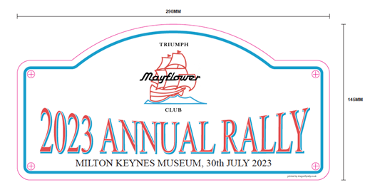
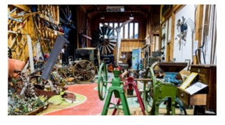
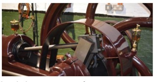
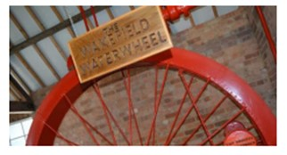

Further Details About the 2023 Annual Rally
30th July
· 19th July 2023
Further to the original event announcement, we now have some more information about the upcoming club rally…
Gates at the museum open from 09:30 for setting-up. Members can attend from 10:00 AM. Postcode for satnav is: MK12 5EL.
Entry to the museum is free for exhibitors (driver and 1 passenger). Hope we get a few cars!
By the way there may be one or two TMC Rally Plates still available, contact the Chairman, James, at chair@triumphmayflowerclub.com.
The designs for the fabulous rally plates — get them before they’re gone!
Further information and photos taken from the TROC (Triumph Razoredge Owners Club) magazine:
Article by Harry Becall:
“Exhibits include: Victorian games room, kitchen, 1940s garden, a recreation of a 1940s street with a pub offering ale and cider, a sweet shop, school room, chapel, and cinema.
There is a working water wheel, and the heavy oil engine shock is often run. The transport hall, mower shed, and the telephone museum are favourites. You can certainly fill a day there, and the attraction with the biggest reputation is the granary area room. Freshly baked cakes and scones, fresh sandwiches, and jacket potatoes, etc., are all at reasonable prices. Be warned though, the bread pudding sells out quickly! So snap it up early.”
